气功与中国哲学
气功的本质特征始终与一系列核心的哲学理念紧密相连。这些理念包括：
- 阴阳对立统一观： 意指阴阳二者虽相互对立，却通过这种对立关系共同构成了一个完整的整体；
- 五行学说（五行转化之理）： 阐述了木、火、土、金、水这五种基本元素之间充满活力的动态相互关系，以及它们与大自然之间永恒的互动与联系；
- 脏腑学说： 这一理论基于数千年来对人体生命现象的细致观察，确立了一种核心信念——即人体的各个脏腑之间不仅相互关联，且除了其生理功能之外，还各自承载着特定的灵性内涵； 特指那些通过手指进行的特殊练习，例如用于传导能量的功法；
- 经络学说： 根据中国哲学的观点，经络是人体内部的能量通道，其作用是充当连接身体与心灵（精神）的桥梁。
下面简单介绍作为气功基础的中国哲学
阴阳学说
道生一， 一生二， 二生三， 三生万物。 万物负阴而抱阳， 冲气以为和。
——老子（《道德经》第四十二章）
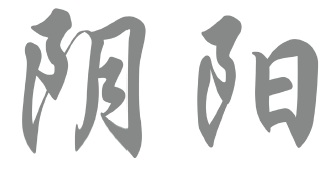
阴阳学说不仅是中国哲学的基本要素之一， 更源于对各种自然现象的观察， 以及对支配其运动与转化之原理的深思。 在其发展历程中，阴阳学说对气功也具有重大意义—— 这种意义延续至今。 除了气论与五行学说…… 阴阳学说是中国哲学的基本要素之一。它源于对各种自然现象的观察，以及对支配这些现象运动与转化之原理的研究。在其发展过程中，阴阳学说对气功也具有极其重要的意义——这种意义延续至今。它与气论及五行学说一道，构成了阐释宇宙间万物相互联系的理论模型。
阴阳学说认为，物质世界与精神世界的发展是由阴阳之气的运作所驱动的。木、火、土、金、水这“五行”构成了世界万物生成的基石。五行之间既相互依存又相互制约，处于不断的运动、变化与转化之中。
该学说主张，自然界万物的特性均可归类为阴或阳。阴阳之间存在着对立、互根、互消与互转的关系。它们既相互补充又相互矛盾，这种特性正是万物发展、变化与转化的源泉。
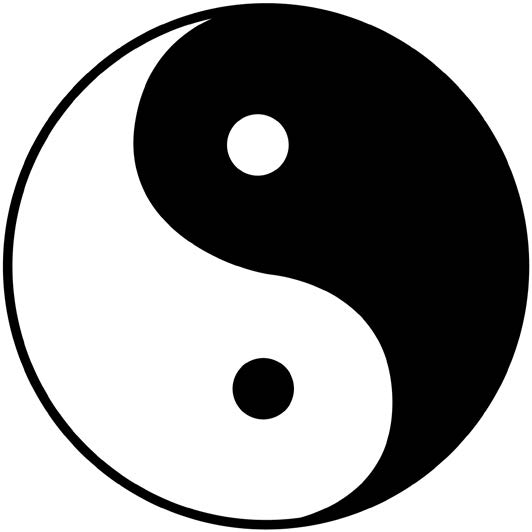
太极图（图7）——这一在西方也广为人知的符号——阐释了阴阳学说的基本概念：外圈代表“创生之虚空”，即一种万物不受束缚、处于无形状态的境界；圈内描绘的阴阳力量，象征着宇宙生成的极性秩序原理，而这一秩序本身也在不断变化之中。因此，该符号揭示了构成整体的各部分之间既相互依存、互为补充，又统一且可变的特性。
阴阳学说在气功中的应用
气功的理论与实践与阴阳学说紧密相连。在实践中，动功（属阳）与静功（属阴）这两种形式便体现了该学说的应用；唯有兼顾这两方面，才能构成完整的修炼体系。 深入来看，阴阳的相互作用也体现在具体功法的各个要素之中。许多动功形式都融合了紧张（属阳）与放松（属阴）的要素。若动作涉及举臂（属阳），必然伴随着落臂（属阴）；若有向前动作（属阳），也总会伴随向后动作（属阴）。通过这种方式，阴阳两极得以平衡，其相互作用的和谐状态也得以稳固。正如动态功法一样，静态功法中同样包含着平衡这两种力量的要素。
综上所述，阴阳学说在气功中有着多种应用方式。为了更深入地理解这一点，下文将从五个方面阐述该学说在气功实践中的具体应用。
如果某项练习涉及手臂上举（属“阳”）， 紧接着必然会有下落动作（属“阴”）；若有向前运动 （属“阳”），也必然伴随着向后的 运动（属“阴”）。通过这种方式，阴阳两极得以 保持平衡，两者相互作用的和谐状态也得以 稳固。正如动态练习一样，在静止状态下进行的练习 同样包含着平衡这两种力量的要素。 如前所述，阴阳理论在气功中有着多种应用方式。 为了更深入地理解这一点，以下五点列举了该理论 在气功实践中具体应用的关键范例。
呼吸
如前所述，吸气被视为“阴”， 而呼气则被视为“阳”。这一原理可在气功实践中 灵活运用。例如，对于那些伴有“阳热”症状 （如烦躁不安或四肢明显发热）的练习者来说， 若能有意识地呼气并自然吸气，往往会感到 身心舒畅、头脑清明且胸怀舒展。 在此类情况下，呼气有助于排出体内过盛的阳气与热量。 然而，若练习者属于“阳虚”体质，则不宜在 调息练习中有意识地呼气，否则可能会引发 胃部不适、头晕或心悸等症状。 针对此类情况，建议采取有意识吸气的方式。
周天运行
所谓“大周天”与“小周天”练习: 其中气沿着特定的经络运行—— 遵循阴阳相互消耗的原则。 任脉（人脉）位于身体前侧， 被认为是阴经；督脉（督脉）位于身体后侧， 被认为是阳经。当能量 在小天道循环中自由地流经这两条经络时， 便能达到阴阳平衡的调节。
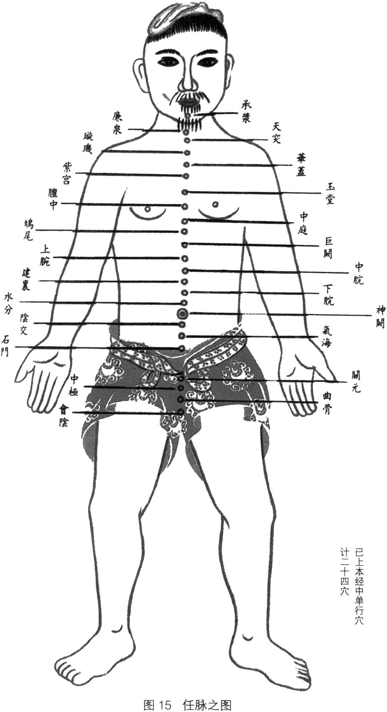
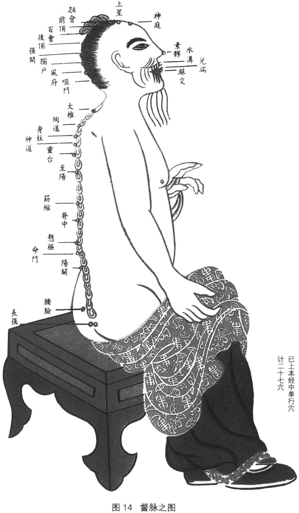
时间
根据中国哲学，一天24小时 可以分为12个时段，每个时段2小时。 晚上11点到早上11点之间的六个时段 被认为是阳经；而早上11点到晚上11点之间的六个时段 被认为是阴经。 原则上，气功可以在任何时间练习。 然而，根据气功大师们传承下来的传统， 在六个阳时段进行的练习通常 对整个身体有特别积极的影响。 在这些时段，阳气在宇宙中最为旺盛， 因此更容易被吸收。晚上11点到凌晨1点 以及上午11点到下午1点也被认为是练习气功的重要时段。 此时练习气功尤其有效， 因为在这些时段，阴或阳达到顶峰， 并开始向其对立面转化。
季节
四季之中，春暖夏热， 秋凉冬寒。练习气功时应牢记这一点。正如《黄帝经》所言 在练习气功时，应将这些知识纳入考量。《黄帝内经》强调，春夏两季应注重养阳，而秋冬两季则应以养阴为主。遵循这一原则，气功大师会根据季节的不同，为练习者提供针对性的功法指导。
**病症状态**
中医认为，要成功治愈疾病，必须针对其根本病因。这一病因往往根植于阴阳二者的关系之中。明代（1368–1644）著名医家张景岳在其著作《类经》中强调：“人之疾病，各有其因；究其病本，不外乎阴阳。” 气功大师会根据学员和患者的个体体质，为其选择适宜的功法。对于属阳的病症，保持静止是关键，因此静功尤为适宜；反之，若患有属阴的病症，则主要推荐动功进行调治。当阴阳失调时，通常建议结合动功与静功，以恢复平衡。气功的宗旨在于实现阴阳平衡，并确立二者和谐共存的稳固状态。
阴阳学说是气功理论与实践的基石。气功大师在防病治病的过程中，也极为重视阴阳二者的平衡。
五行学说
五行学说（Five Phases Theory）也被称为“五元素学说”（Five Elements Theory）。它是继阴阳学说之后，中国文化、哲学及医学领域的又一重要指导原则。作为医疗保健的重要基石，该学说广泛应用于疾病的预防、诊断与治疗之中。
“五行”（Five Phases）这一术语本身就体现了该理论的核心理念：即建立在变化与动态过程之上。木、火、土、金、水这五种元素之间的相互依存与相互影响，构成了该理论考量的核心。
在此视角下，当下的存在仅仅是过去与未来之间的一个过渡环节。生命历程中持续不断的变化——从出生、生长、发育、成熟，直至衰退与转化——便是这一理念的生动写照。
五行的起源
人类始终致力于探寻自然界各种现象以及自身身心活动的内在机理。正是在这种探索过程中，五行（Wu Cai）学说早在中国的周朝（公元前1122年至公元前221年）便已开始形成。木、火、土、金、水这五种元素并非仅仅被视为物质构成成分，更被看作是特定特质的象征，被认为是构成万物生命的最重要基本要素。关于它们的描述及其相互间的对应关系，逐渐演变成了一套完整的理论体系。
五行演化理论的特性与对应关系
在五行演化理论中，木、火、土、金、水这五种元素各自象征着独特的特性与功能。该理论的一个核心组成部分是所谓的“对应”体系。这一体系反映了一种将涵盖微观与宏观层面的各种现象及特性归属于特定元素的思维模式。其中许多对应关系在中国哲学及中医领域极具价值，广泛应用于疾病的预防、诊断与治疗。例如，人体内脏可与五行建立对应联系；基于五行的特性，人们便能够阐释这五脏的生理功能。
木
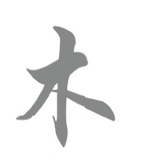
“木”这一元素代表着新的开端、 活力与生长。它源于 植物的繁花盛开与 树木的茁壮萌发。 从意象上讲，它象征着向四面八方 扩展的动态趋势。 肝脏与“木”元素相关联。 肝脏具有藏血 和主筋的功能。它确保 气在体内各处 顺畅流动。此外，作为精神层面， 它还容纳着“魂”（Hun）； 这一魂魄与灵性相连， 也是梦境的来源之一。 愤怒与狂怒会损害 肝脏的功能。
火
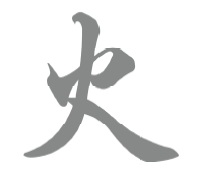
火这一元素象征着高度的 活力、动态与温热。 它代表着事物的进一步发展与成长， 并体现出一种向上的态势。 心脏与火元素相关联。 心脏的主要功能是 主血脉（统摄血液与控制血管）。 心气下行以交会于肾气。 心藏神， “神”主宰着意识、 思维、情感与感知等活动。 心脏与“喜”这一情绪密切相关。
土
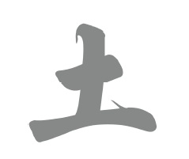
作为五行中的核心要素，“土”起着 中心参照点的作用，因而 象征着稳定与中正。 脾与“土”这一要素相对应。 通过其生理活动，脾确保了全身的滋养， 正如大地滋养着整个世界一样。 脾主肌肉与四肢， 主管运化功能， 并控制气的升举。脾是“意”的居所， “意”负责思考、想象、 记忆及专注力等多种心智活动。 过度思虑会损害脾的功能。
金
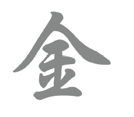
从象征意义上讲，“金”这一元素不仅代表着成熟， 还代表着活动力的减弱以及“放下”的过程。 “金”元素的能量运行方向是向内的。 肺与“金”元素相关联。 肺主宰经络与血管，并调节 各项生理活动。同时， 它还控制着气与体液的分布及 向下运行。肺所对应的精神层面（即“魄”） 通常被译为“肉体之灵”或“肉体之魂”。 它代表着（包括其他方面在内的） 身体感觉与 情绪感受。悲伤与忧愁 可能会损害肺的功能。
水
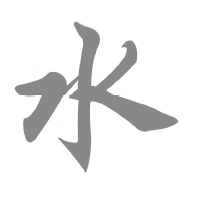
“水”这一元素象征着 已进入完全静止状态的 活动。它代表着停顿与反思的 时刻，同时也象征着 生命的源泉。水具有 明显的向下运动特性。 肾脏与“水”元素 相关联。肾脏负责藏精， 并主宰着出生、生长、 生殖与发育。 肾脏是被称为“气”的 生命能量的主要储藏库。肾气 为了执行某些生理功能（如排尿） 会向下运行， 而为了执行其他任务 则会向上运行。肾脏还蕴藏着 意志力（“志”）的精神层面， 涵盖了坚韧与果决等 特质。 肾脏功能 可能因恐惧与惊吓而受损。
这一系列对应关系——尤其是与人体相关的部分——展示了各脏腑及其相关现象如何构成一个不可分割的整体。每一行（五行）都对应着一个阴脏和一个阳脏；以“木”为例，其对应的阴脏为肝，阳脏为胆。此外，“木”还对应着眼、筋与肌肉、怒与呼喊，以及东方、春季、风和青绿色等事物。五行相关的部分对应关系可见于旁侧的表格。
五行演的滋养循环关系
“转化阶段”理论建立在各元素间的动态关系之上。它们的相互作用构成了一个循环过程：一种元素由另一种元素生成，并进而催生出下一个元素。 这些过程——在德语区被称为“滋养循环”或“母子法则”等——在中文里被称为“相生”循环。这种关系可以用一个圆来表示，五种元素均匀分布在圆周上（见图19）。
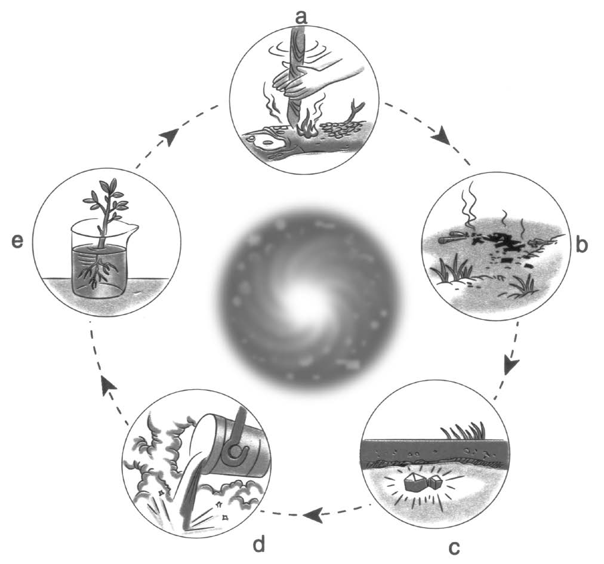
若按顺时针方向观察，滋养循环遵循以下演变顺序： 木生火 (a) 木的能量催生出充满活力且温暖的火。 火生土 (b) 火燃烧后的灰烬滋养了大地，使其变得肥沃。 土生金 (c) 在特定的矿物成分与高压条件下，金属于大地之中孕育而生。 金生水 (d) 溶解的金属以微量元素的形式为水注入活力。 水生木 (e) 草木的健康生长离不开水。
基于它们之间的对应关系，这些元素间的相互关联可被视为人体脏腑关系的模型（图20）。根据五行生化理论，它们通过“相生”规律相互联系：
- 肝生心
- 心生脾
- 脾生肺
- 肺生肾
- 肾生肝
在相生规律中，每一阶段的循环演变都会改变后续过程的初始条件。若某一元素无力滋养下一个元素，整个系统便容易出现失衡。以医疗保健和中医为例，肝（属木）的功能失调可能提示需要调和并增强肾（属水）的功能。若“母”元素能量充沛，“子”元素便能得到充分滋养，进而繁衍出健康的“子代”。然而，肝功能失调也可能源于心（属火）的过度索取。在此情形下，木元素（母）因火元素（子）的过度消耗而变得衰竭。此类失衡背后的机制被称为“耗损循环”（或“母病及子”/“子盗母气”）。面对此类失衡，治疗目标同样是通过个性化的干预措施，恢复各元素间的和谐与平衡。
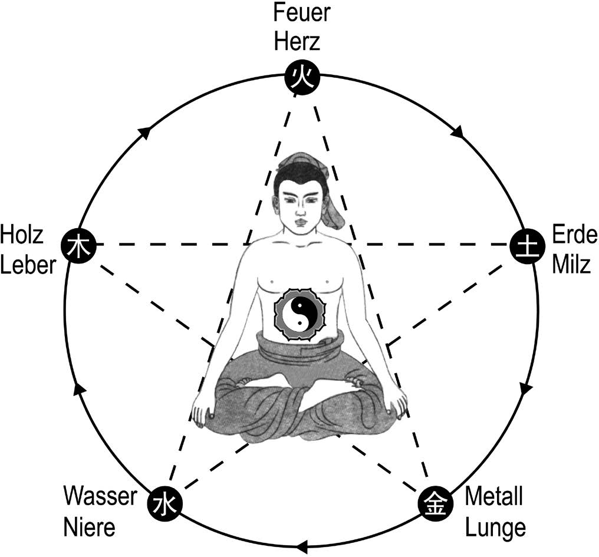
五行转化理论在气功中的应用
五行转化理论阐述了微观世界与宏观世界内部的相互关系及变化规律。当应用于身心层面时，该理论也可用于解释生命活动。在此语境下，五行转化理论描述了人体脏腑之间的相互关系与功能效应。这不仅有助于深入理解正常的生理过程，还能为疾病预防与治疗提供指导。正如以下示例所示，这些见解可以多种方式应用于气功实践之中。
气功实践的三大支柱
调身、调息与调心这三类练习构成了气功的三大支柱，它们与五行转化理论紧密相关。 在调身练习方面，人们高度重视形体特征与健康状况。根据个体特质，人可归属于五行（木、火、土、金、水）中的某一类。 气功大师利用这些归属关系并结合五行转化理论的实际应用，为每位学员确定适宜的练习内容；此外，他们还依据该理论来安排调身练习的先后顺序。 在呼吸调节方面，多种气功流派都采用一种特定的腹式呼吸法。对于脾胃虚弱者，通常建议练习这种呼吸法。如果病症的根源在于肝与脾胃之间的失调，那么这些特定的腹式呼吸练习在改善病情方面往往成效显著。它们能增强脾胃（属“土”）的功能，从而使其能够更好地抵御肝脏（属“木”）的过度克制。 在调心（调节意念）的练习中，将意念（“意”）集中于特定的穴位、身体部位或脏腑，可通过“气”的作用激活相应脏腑的功能。在此过程中，练习者利用五行与其对应脏腑之间的相互关系来引导意念。例如，若肺气虚弱，可将意念集中于脾气以滋养肺脏；脾属土，肺属金，而土能生金（土生金）。由此可见，这一例子运用了五行生克制化中的“相生”原理。具体而言，练习者可以将意念集中于足三里穴（该穴属胃经，位于膝部附近），以此来滋养肺脏。
气功练习中的时间与方位选择
许多气功功法若能配合特定的时间（如一天中的不同时段或季节）与方位进行，往往能收到更佳的功效。这些要素可根据个人的具体需求与健康状况进行调整。五行理论为确定练习时的适宜时间或方位提供了重要指导。例如，根据五行相应的对应关系，身体出现的特定症状可为合理安排练习提供有益线索。以少林内劲一指禅为例，若练习过程中出现咳嗽，建议静心面朝西方。咳嗽这一生理反应与“金”行相关，而西方亦属“金”位；鉴于肺脏同样对应“金”行，选择适宜的练习方位便能有效地调养并增强肺部功能。
选择用于预防与疗愈的气功功法
尽管各类气功体系都秉持整体观， 但每种体系都有其独特的运作方式。 辨证——涵盖了望、问、切、嗅、听等诊察方法—— 是气功疗法与中医（TCM）中的关键手段。 所有的辨证方法都建立在“外表反映内在”这一洞见， 以及“机体局部与整体存在对应关系”这一信念之上。 正统医疗气功的一个核心原则，就是根据辨证结果来选择功法。 在依据辨证选择功法时，常会运用“五行”理论。 例如，在治疗肝脏疾患时，若采用“意守外境”的方法， 练习者可将意念集中于环境中的一棵绿色的冷杉树或其他 令人心神安宁的景物上。由于肝（属“木”行）开窍于目， 这种练习有助于平肝并调和肝脏机能。绿色—— 在五行对应体系中与肝脏相关——在此情境下具有特别有益的功效。 中国气功流派众多，其中一些从根本上基于五行理论。 许多气功功法也依赖于对五行知识的实际应用。 综上所述，五行理论在气功中得到了广泛应用。 透彻理解五行的特性——包括其对应关系、相互关联以及 五行生克演化规律——并能有效运用这些知识， 有助于在气功练习中正确施法，从而成功实现预防与疗愈的目标。
脏腑学说
脏腑学说常被视为中医理论的核心。它体现了阴阳与五行生克制化的普遍规律，以及“气”的观念。该理论建立在人体整体观的基础之上，描绘了一幅涵盖生理功能、精神活动、基本物质、组织类型、感官以及环境影响等诸多方面的功能关联图景。从这个意义上讲，脏腑理论是一种阐释人体身心功能、病理变化，以及脏腑之间及其与机体其他部分相互关系的理论体系。因此，脏腑的功能可被视为中医生理学的关键要素。
脏腑的性质
人体内部器官统称为“脏腑”。根据中医理论，脏腑分为五脏（属阴）、六腑（属阳）以及奇恒之腑（属阳）。尽管“脏”与“腑”在翻译时均对应“organ”（器官）一词，但考察下文列出的汉字，便能清晰地看出这两个术语在概念上的差异。
脏
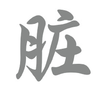
“脏”字的左侧部分 可译为“肉”。该字右侧较复杂的 部分意为“贮藏”。综合来看， 这为理解“脏”的功能提供了线索， 即负责贮藏基本的生命物质—— 包括精、气、神、血 和津液。
腑
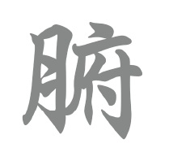
“腑”字的写法 同样在左侧包含“肉”字。相比之下， 其右侧的构件可译为“行政中心”、 “政府所在地”或“宫殿”。就 “腑”的功能而言，这意味着它们负责 转化饮食以生成气血—— 这正如中国古代政府负责 粮食供应的分配一样。
五脏分别是肝、心、脾、肺、肾。心包，又称心脏囊，也属于五脏之列（详见本章末尾的解释）。五脏的主要功能之一是生成、转化和调节体内的基本物质。正如前文以书法形式描述的那样，五脏的主要功能之一是储存这些生命物质。然而，这里所说的储存，是指由腑经食物转化后输送至五脏的纯净精炼的物质。
六腑分别是胆、小肠、胃、大肠、膀胱和三焦（详见本章末尾的解释）。它们转化并精炼摄入的食物和饮料，并从中提取出储存在五脏中的纯净物质。同时，它们也负责排出体内的废物。作为这些过程的一部分，腑脏器不断地被补充和排空。腑脏器的功能可以简化为“吸收”、“转化”、“运行”和“排泄”。
除了五脏六腑之外，还有其他脏器，被称为奇阳脏器。它们的结构和功能与其他脏器不同，从而完善并连接了整个系统。奇阳脏器包括脑、骨髓、骨骼、血管、子宫和胆囊。它们都具有与脏脏（阴脏）相似的功能，
但由于它们大多是空心的，所以更接近于腑脏器（阳脏器）。
六奇阳脏器储存着精微的物质，例如血液、如髓或胆，且从功能角度看，它们与肾有着直接或间接的联系。 根据中医理论，阴脏（脏）位于体内深处，而阳腑（腑）则位于体表或较浅部位。 值得注意的是，这种关于位置的描述并非单纯指空间上的方位，而是指生理与病理、躯体与心理功能（涵盖精神与情感层面）之间的关系，以及通过经络系统将内外相连的关联性。 精、气、神、血与津液构成了人体的基本物质，也是脏腑活动的物质基础。脏腑的各项活动——如生成、转化、维持、输送与布散——均依赖于各脏腑功能之间的相互作用。
关于心包的说明
心包作为一种脏器，其性质不像其他“脏”（阴性脏器）那样界定明确。 它处于心的直接影响范围内，像保护鞘一样环绕着心，使其免受外邪侵袭。若将其视为一个脏器，心包的功能与心相似。 循行于心包的经脉被称为“心包经”。该经脉影响着胸部中央的“膻中”区域，同时也关联着心与肺。 许多传统典籍——包括《黄帝内经》——仅提及五脏，而未将心包列入其中。然而，早在古代，便已有医家将心包经视为第六脏。这一观点源于心包（属阴）与三焦（属阳）之间，以及手厥阴心包经（属阴）与手少阳三焦经（属阳）之间的表里关系。在此背景下，形成了人体共有十二脏腑（即六脏与六腑）的理论概念。
三焦的解析
三焦在人体各部位之间起着协调与平衡的作用。上焦 通常涵盖心与肺；中焦包含消化器官； 下焦则包括肾、膀胱及生殖器官等。 三焦主导着气的转化过程。 其核心功能之一是维持气的生成过程， 从而使食物得以被机体消化与利用。
气功实践中的脏腑理论应用
脏腑理论以整体视角看待人体。这种整体性主要体现在脏腑间的相互联系及其功能的相互作用上。尽管各脏腑拥有特定的功能，但它们之间紧密相连；即便在病理状态下，各脏腑之间也会相互影响。基于这一背景，若能深入理解脏腑理论，便能针对性地运用气功，从而有效地进行疾病预防与治疗。 下文将以五脏为例，介绍如何将脏腑理论应用于气功练习之中。
肝脏
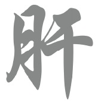
肝脏承担着许多重要功能。 其中包括储存血液 以及促进“气”的顺畅流动。 像所有器官一样，肝脏也 具有情感层面的属性。它 容易受到负面影响，尤其是 愤怒和暴怒情绪的冲击。为了 平息肝气并确保其 正常、和谐地流动， 气功练习通常 非常强调静心与 放松、保持微笑， 以及舒缓情绪。 在练习过程中及练习结束后， 人通常会感到身心舒畅、 愉悦。在这种状态下， 肝脏能够以最佳状态 履行其各项职能。 通过强健筋腱，也能 起到增强和调理肝脏的 作用。肝主筋， 因此肝脏与筋腱关系密切。 在气功练习中，各种动作和姿势 往往结合了特定的意念集中与呼吸配合。 筋腱得以强健——部分归功于 张力与放松的交替作用—— 并最终对肝脏产生积极影响。 肝开窍于目，这体现了 内在与外在之间的紧密联系。 正因这种联系， 气功练习可以通过锻炼 眼睛来对肝脏产生调和作用。因此， 少林内劲一指禅中的某些 练习融入了护眼的关键要素。 例如，在名为“调息唤气”的动态练习中， 练习者会有意识地将注意力短暂集中于 手掌心的“劳宫穴”； 在静止站桩练习中，目光则直视 前方的地面或美丽的绿色植物。 在闭目进行的静止练习中， 目光则投向美好的内在景象。 这些练习要素往往具有 特定的疗愈功效。
心脏
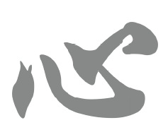
心脏被视为所有内脏器官中最重要者，在中国有时被称为“五脏之君”。其主要功能是主血脉。心藏神，主宰精神活动，并与“喜”这一情绪相关联。在练习气功时，专注于调心能增强心气，使心脏得以稳定地发挥其功能。在此状态下，血液能在血管中和谐运行；心脏功能的旺盛与协调，有助于保持神志安宁。因此，全身心投入练习， 并保持端正的姿势与“全心全意”的态度，至关重要。心开窍于舌。在许多正统气功流派（如少林内劲一指禅）中，练习时都极度重视舌的作用。例如，舌尖可抵上颚，或沿牙齿与牙龈外侧做环形运动。舌的活动既影响神的活动，也影响气血的运行。
脾脏
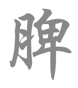
脾脏的主要功能包括： 辅助胃的消化， 以及主导营养精微、 气和津液的运化。 脾主气的升举， 并统摄血液、肌肉 与四肢。过度思虑或忧愁 会对其功能产生不利影响。 气功练习能以多种方式 激发并支持脾的功能。 例如，它们能促进能量在三焦内的 顺畅流通，从而协调 脾与胃的活动。 由此，脾的运化功能 得以激活并增强。因此， 食欲改善往往是 这些练习带来的显著成效。 当脾的功能强健且协调时， 全身各组织——乃至四肢末梢——都能获得充足的滋养。脾的功能 既可通过动态气功练习来增强， 尤为适宜的则是本书介绍的“马步”等 静功练习。这些练习能增强肌肉力量， 而肌肉与脾关系密切， 因而能对脾的功能 产生积极影响。
肺脏
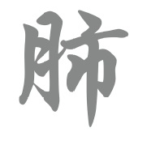
肺脏主气，司呼吸。 其多种功能还包括 主治节（统摄经络与血管）、 调节气与津液的分布及肃降，以及调节 全身的生理活动。悲伤与忧愁 会给肺带来不利影响。 许多气功练习都特别侧重于 激活并增强肺部功能。 除了“调息”练习外， 还采用静功与动功， 并结合适当的呼吸 与积极的意念。 肺开窍于鼻。基于这一原理， 少林内劲一指禅中的某些静功 将意念集中于鼻梁或鼻尖。 这能自然地使 身心平静下来。 除了其他诸多职能外，肺还 主皮毛。因此，通过 少林内劲一指禅练习来调节呼吸， 能使皮肤变得细腻红润。 这种关联解释了为何 许多气功大师看起来非常年轻，皮肤 光滑且富有光泽。这些练习的 另一大益处也显而易见： 容易感冒或过敏的人 在练习数月后会发现， 其易感性显著降低。 这一效果同样源于 通过气功练习增强了肺部功能。
肾脏
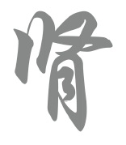
肾脏承担着多种重要功能。例如，它藏精，并主宰着人体的出生、生长、生殖与发育。此外，肾脏还能生髓、养脑、主骨。肾脏的功能还包括调节体内津液的代谢与输布：它负责将精微清纯的物质沿脊柱向上输送，同时引导混浊的物质向下流注至膀胱。恐惧与惊吓等情绪可能会损伤肾脏。在中国，肾脏常被视为“生命之根”或“先天之气”的根本。理解肾脏对生命至关重要的作用，是气功修习的核心。因此，在练习少林内劲一指禅时，人们高度重视“命门”部位—— 肾脏。该部位与肾脏功能密切相关，亦被称为“生命之门”。例如，“转天柱”这一动作练习旨在强健命门与肾脏。此外，在气功练习结束后按摩命门区域，也有助于改善肾脏功能。除了上述方法外，鉴于肾脏与骨髓及骨骼之间存在紧密联系，我们还可以通过其他途径来增强肾脏功能。例如，“摇脊强身”练习能够强健脊柱，进而对肾脏产生积极影响。此外，通过静功“站桩”或特定的手指功法，也能起到“补肾”与强骨的作用，从而维护身体健康。
尽管前文提及了各种与“脏”相关的气功练习，但其功效始终是针对包含身心在内的整个机体发挥整体性作用的。因此，所有练习都会自然地关联到脏腑及奇恒之腑，并涵盖其各自的生理与心理层面。在气功修炼中，五官四肢与内脏之间也保持着密切联系；故而，涉及四肢的所有感知、效应及现象，都直接对应于脏腑整体及其功能系统。每一项气功练习都能产生多种整体性效应，其中某些效应对于特定脏腑尤为有益。由此可见，尽管有些练习对心脏具有显著的积极作用，但并不存在所谓的“心脏气功”这一特定类别。内脏的功能状态是决定人体健康的关键因素，因此，正常的脏腑活动可被视为维护健康的基础。气功练习对内脏的调节作用，正是阐释气功防病治病潜能的关键所在。正因如此，将脏腑理论融入气功实践，对于气功师而言至关重要。
经络理论
“经络是气在全身各组织间往复流动的通道， 同时也是‘神’（精神与意识）在体内运行的路径。”
根据经络理论，人体内存在着重要的通道，它们与血管、淋巴系统及神经通路并列，发挥着核心作用。这些被称为“经络”的通道早在古代中国便已被发现，并历经了长期的研究。尽管经络通常肉眼不可见，但在特定条件下却可被感知与定位。它们纵横贯穿全身，连接各个部位，构成了一个错综复杂的通道网络；生命的关键信息正是通过这一网络，以高度灵敏且动态的方式进行传输。经络系统在人体内承担着多种功能：它对生命活动进行重要的调节，传递源自物质层面的信息，并确保气与血的流通。气血的畅通无阻，是人体身心各层面和谐互动的基本前提。经络理论阐释了经络系统中气运行的规律、通道的生理功能、经络与脏腑的关联，以及可能出现的病理变化。它是气功实践的基石，也是中医理论体系的核心组成部分。 气功与经络理论之间存在着密切的联系，这主要体现在两个方面：首先，气功在经络的发现与探索过程中长期发挥着重要作用；其次，经络理论所蕴含的深刻见解，构成了气功锻炼与疗法的重要基石。旨在调节身、息、心的练习，属于气功疗法中最古老且最简便的形式。通过将注意力平静而专注地集中于身体的特定部位，练习者最终能够感知到“气”沿特定线路的流动及其循环运行。这种感知能力使人能够逐渐直接体察并理解经络、经络循行路径以及分布于其上的穴位（腧穴）。因此，通过气功实践进行亲身体悟，同时研习经络理论与关键穴位知识，应成为每一位气功练习者的重中之重。
经络理论的历史与起源
关于经络的存在及其重要性的知识，是中国文化中历史悠久的一部分。这些知识主要源于历代气功大师的洞见与经验总结；他们在深度静定状态下进行修炼，从而得以观察身心的内在景象。唯有凭借这种高度敏锐的感知力，人们才得以理解支配这些通道分布与结构的原理。 关于经络的另一类知识源自中医医师的观察，他们主要通过针灸临床实践积累了相关见解。由此，人们对穴位的具体特性以及各种疗法所引发的生理反应有了日益深入的理解与掌握。随着时间的推移，关于经络与穴位结构的认识不断丰富，最终形成了系统的经络理论。 关于经络的最早详尽文字记载见于两千多年前的《黄帝内经》。该著作系统地阐述了经络的循行规律，并强调了经络作为特定脏腑与体表各部位之间联络通道的功能。在中国南方长沙地区的考古发掘中，发现了经络知识应用于实际的有力证据。当地出土了汉代（公元前206年—公元220年）的古籍卷轴，其中记载了总计十一条经络。经络理论在发展过程中不断得到充实与完善，许多早期记载的见解如今已得到现代科学与研究的证实。
经络系统
在中医里，经络被称为“经络”（Jing-Luo）。在此语境下，“经”（Jing）意指“连续的通路”，这与指代生命基本物质的“精”（essence）一词截然不同。13 相对而言，“络”（Luo）则译为“网”。这两个词初步表明，经络遍布全身，将身体各部位紧密地连接成一个网络。
经络系统的构成
众多的“经”与“络”共同构成了经络系统。在该系统中，“经”构成了主要的连接线路，且几乎总是呈垂直走向。主要的“经”包括与脏腑直接相连的十二正经，以及与脏腑无直接联系的奇经八脉。“经”与“经”之间通过更为细密的“络”相互连接。“络”直接从“经”分出，纵横交错于全身，从而将机体联结成一个统一、协调的整体。 当经络内的气血运行通畅和谐时，身心便处于平衡状态，人也就保持健康。因此，经络的主要功能在于促进气血稳定和谐地运行，并将脏腑彼此之间以及脏腑与体表、肢体连接起来。体表上脏腑之气与经络之气汇聚的部位被称为“穴位”；其对应的中文术语是“腧穴”（Shuxue）。其中，“腧”（Shu）可译为“输送”或“转运”， 而“穴”（Xue）在此语境下并不指代“血液”14 （即指代生命基本物质时的那个“血”）， 而是指开口、孔洞或通道。合起来， 这些词形象地描述了一条“通向深处的输送通道”。 “腧穴”部位特别适合进行针刺或艾灸治疗。 在气功练习中，它们也是保持意念集中的重要焦点。此外，在涉及能量传输（即“发放外气”）的气功疗法中，这些穴位被用于“气”的发射与接收。激活这些特定穴位可启动对机体整体功能的调节，从而增强个人的疾病预防潜能与（自我）修复能力。
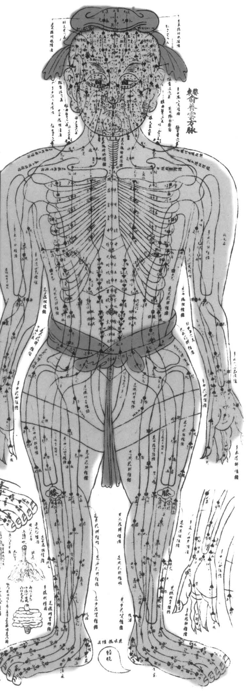
经络理论在气功中的应用
经络是气血运行的重要通道。人体的脏腑、四肢、五官，以及血管、其他组织和精神层面，皆有赖于经络所构成的相互联系。因此，气功修炼的一个关键功效，便是确保经络内气血运行的通畅与和谐。通过气功锻炼，可以平衡经络之气，调和气血，进而增强个人的疾病预防与（自我）康复能力。
经络理论与对“气化”过程的理解，是气功不可或缺的基石。气功疗法同样直接建立在经络理论的见解及其指导原则之上。反之，气功实践也长期丰富着经络理论的发展。时至今日，许多中国气功大师仍坚信，经络最初是在气功修炼过程中通过对这些通道的直接感知而被发现的。明代（1368–1644）著名医家李时珍在其著作《奇经八脉考》中，对早期典籍中关于这八条经脉的记载进行了梳理与肯定。他在书中引用了宋代（960–1279）道家大师张紫阳的观点，强调气功修炼使人能够感知并观察到经络的内在景象。由此可见，唯有亲身修炼气功者，方能真正观察经络并验证相关描述的准确性。
李时珍在著作中强调，张紫阳所描述的奇经八脉，与传统中医（TCM）中通常所知的经脉路径有所不同。
许多关于针灸、艾灸和推拿按摩的中国古典文献都强调，欲习得这些技法者应积极修习气功。通过气功练习，习练者能够亲身体验“气”在经络中的运行及其所引发的种种变化，从而在切身体悟中确证经络的存在。归根结底，对经络循行路径的自我感知，正是灵敏且高效地运用上述三种技法的基石。若缺乏亲身体验，对经络的认知便仅停留在理论层面；而通过气功修习，习练者能逐渐建立起对经络内气机运行的深刻理解。
气功练习对经络中的气血输布具有显著影响。随着修习的深入，气功有助于确保气血在全身通畅、和谐地运行，最终实现气血的顺畅流通。因此，经络阻滞的问题往往能通过气功练习得到极大缓解，甚至彻底解决。气功练习与某些特定经络（如奇经八脉）之间存在着尤为密切的联系。下文将进一步阐述气功与经络之间这种多维度的关联。
气功作为一种人生哲学
气功绝不仅仅是一系列单纯的肢体练习，而是一种整体的、充满觉知的、健康的生活方式。气功的宗旨在于维护或重建健康，实现身、心、灵的 平衡，并充分开发人类所有的积极潜能。它所追求的，是一种广阔而深远的“气”之和谐境界。 气功深厚的哲学背景，将人体视为一个“小宇宙”，视其为宏大宇宙（大宇宙）的一个缩影与映照。作为一种旨在调和平衡的方法，气功伴随着 我们人生的成长、变化与衰老过程，为我们提供切实的助力，并构建起一套思想框架；借此框架，我们得以审视个体所遭遇的种种际遇，并探究 生命中那些更为深邃的终极命题。因为气功既修身亦修心，它为我们的言行举止提供了指引与准则。 初习气功者，通常会将重心置于身体的锻炼之上，旨在强身健体。一旦身体的健康状况得以恢复，心智与灵魂也会随之逐渐放松下来。内心的平 和与宁静便会油然而生。此时，人们便能以一种更具建设性的方式，且愈发从容自若地应对生活中的种种挑战。一种与宇宙能量紧密相连的愉悦 感，亦会随之浮现。 若您真心渴望领悟气功的精髓，希冀以简捷之道汲取宇宙能量；若您真心想要学会如何驾驭并运用这股能量，那么，您便必须深入探究身、心、 灵与能量之间那错综复杂的相互作用关系。
气功与灵性
随着身体健康的稳固、内在平衡与力量的提升，以及“五常”（即仁、礼、信、义、智）美德的修养，那些精进修习气功的人们，往往会体验到 自身灵性维度的拓展与升华。这一过程的起点，即是所谓的“修心”——对心智的磨砺与调伏。在此修心之途上，克服执着、放下贪欲，以及摒 弃种种负面习性，皆是至关重要的关键步骤。 诸如观想“母爱”、培育“慈悲之心”，抑或转化“愤怒情绪”等特定的冥想练习，有助于净化心识，并引领修习者深入触及自身灵魂深处的隐 秘层面。尤其是气功练习中那种独特的静修特质，能够引导人们深入审视跨越宗教界限的、关于生命本质的重大命题。此外，这些练习还能开发 出一些特殊的能力——其中包括但不限于敏锐的直觉。